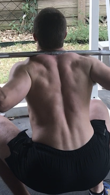

Myths, programming, thoughts.
Dedicated core training is important. Dedicated core training is useless if the program is well-designed. Dedicated core training has its place and depends on goals.
I've seen every single one of these statements said with the utmost confidence by reputable coaches. Who to believe? Are they mutually exclusive, or can all three be true at once? Before addressing that, the term core should be defined and some popularized "truths" about core training dispelled.
I refer to the core as the torso, but to use common terms, the abs (front), obliques (side), and back (back, including the lumbar and thoracic portions (cervical doesn't count)).
First, core work will result in visible abs, and while having a low bodyfat percentage will help them show, they'll still be skinny and look like Fight Club Brad Pitt. Abs need hypertrophy to show through the layer of fat most trainees have built up on their stomach. Approaching this from both an exercise and diet perspective is the best way there. The famous kitchen quote is bullshit and should be replaced with:
Abs are built in the gym and made in the kitchen
Second, squats, deadlifts, and standing presses do not build core strength unless it's truly heavy weight. No, two plate squats don't count. No, three plate deadlifts don't count. No, one plate presses definitely don't count. Unless the weights are truly heavy (and it should be obvious when it's truly heavy), dedicated core work should still be a part of the program.
Third, endurance vs. strength regimes for core work is probably goal- and discipline-dependent, but when in doubt, err on the side of strength. If core endurance is already trained by the sport itself, then why should it be trained in the gym?
Now, onto the three initial statements:
As with every exercise program, choose that one that allows the best adherence and most consistency over the long-term. And like most exercises, two core sessions per week is likely the minimum effective dose for trained athletes.
I've also followed gymnastics-based core work, first through a program which will not be named because I believe the founder is evil, then through the r/bodyweightfitness (a community that I was one of 20-ish "Veteran Users" out of 1+ million subscribers).
Core work was divided up between compression and hollow strength. Compression work included V-ups, X-sits (L, V, Manna), and hanging leg lift variations. Hollow strength included hollow body holds/rocks, body levers, and front lever work.
The mods adopted the extension/anti-extension/anti-rotation philosophy then went away from it, which I believe to be a mistake.
Mountain Tactical Institute's Rob Shaul invented the chassis integrity concept after discovering a disconnect between his core and legs, despite both being strong. I believe this to be a bit more "functional" than hollow body holds and V-ups, as it mimics real-life movements.
Joshua Naterman is a trusted source of information, and while I haven't trained weighted situps, he knows what he is talking about.
As much as I trust Stuart McGill and his expertise on back issues and its rehabilitation, his stance on holding a position for a maximum of 10 seconds and increasing the reps is silly. Like all other muscle groups or movements, the core can and should be progressed, whether in through intensity or volume. 10 seconds is too short for the variations he recommends to have a strengthening effect, requiring a standard progressive overload approach.
Treat the core like any other muscle group. Train it a few times a week, deload when needed, and increase intensity or volume slowly but steadily. Do both static and dynamic exercises. Force the core into awkward positions to learn which aspect is weak, then focus on fixing that.